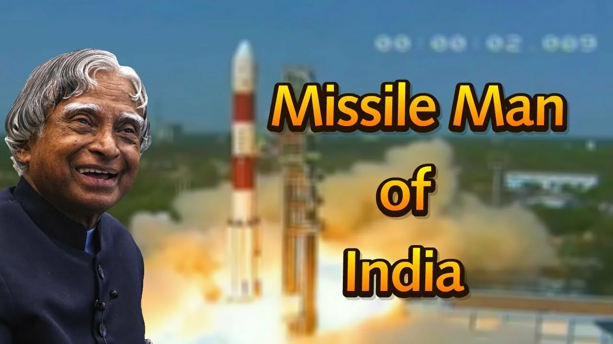

A.P.J. ABDUL KALAM
Missile Man Of India

"Small aim is a crime; have great aim."
Here's a time-line of A.P.J. Abdul Kalam's life:
- 1931 - Born Avul Pakir Jainulabdeen Abdul Kalam on October 15, in Rameswaram, Tamil Nadu.
- 1954 - Graduates in Physics from Saint Joseph's College, Tiruchirappalli, in 1954.
- 1960 - Gains degree in Aeronautical Engineering from Madras Institute of Technology.
- 1969 - Transferred to ISRO from the DRDO.
- 1980 - he was the project director of India's first Satellite Launch Vehicle (SLV-III) which successfully deployed the Rohini satellite in near-earth orbit in July 1980
- 1992 - From 1992 to 1999, Kalam was the Chief Scientific Adviser to the Prime Minister and the Secretary of the DRDO. Kalam was the Chief Project Coordinator during the Pokhran II tests. During this time, Kalam became India’s best-known scientist.
- 2002 - Abdul Kalam was elected the 11th President of India. He had won by a huge margin. He was the first scientist to become India’s President and incidentally the first bachelor too.
- 2015 - Abdul Kalam died of a cardiac arrest while giving a lecture at the IIM Shillong on 27 July 2015. There was widespread grief expressed at his passing away with the government of India declaring a 7-day state mourning.
| Year Of Award | Awards Or Honours |
|---|---|
| 1981 | Padma Bhushan |
| 1990 | Padma Vibhushan |
| 1997 | Bharat Ratna |
| 1997 | Indira Gandhi Award for National Integration |
| 1998 | Veer Savarkar Award |
| 2007 | King Charles II Medal (Royal Society, UK) |
| 2014 | Doctor of Science (Edinburgh University, UK) |
"India must stand up to the world. Because I believe that unless India stands up to the world, no one will respect us. Only strength respects strength. We must be strong not only as a military power but also as an economic power." —A.P.J. Abdul Kalam